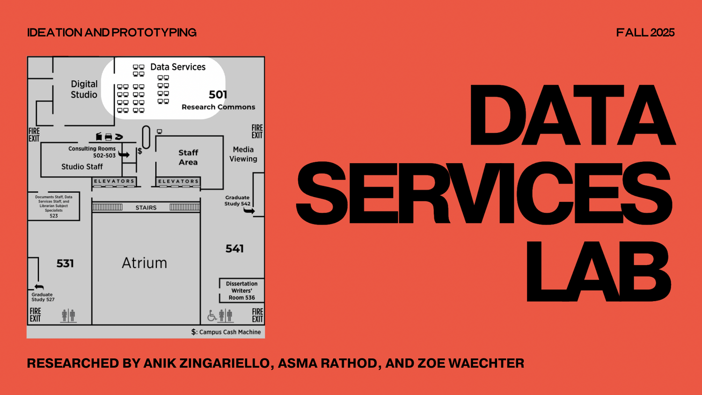
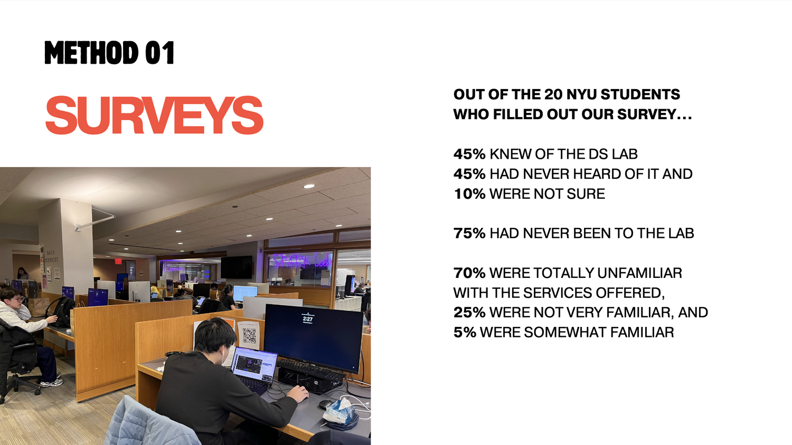
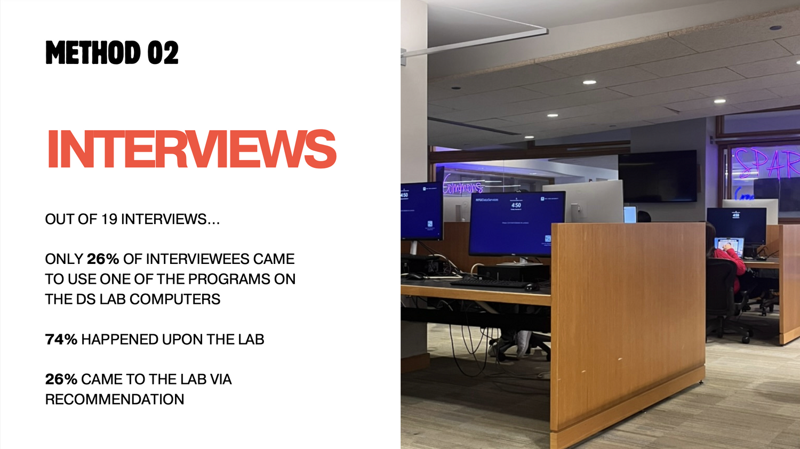
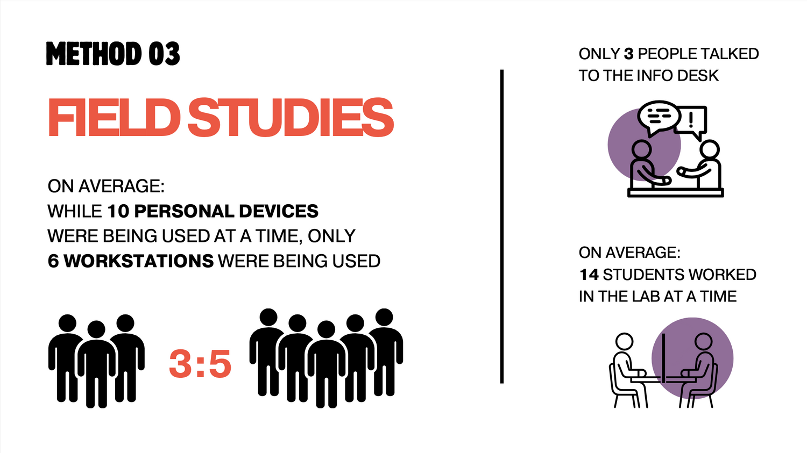
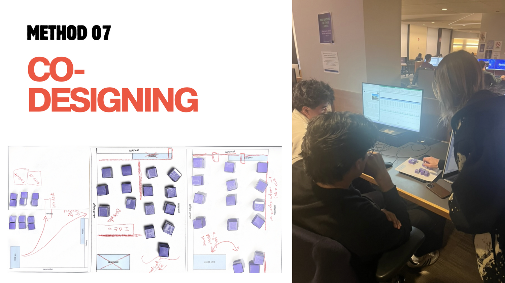
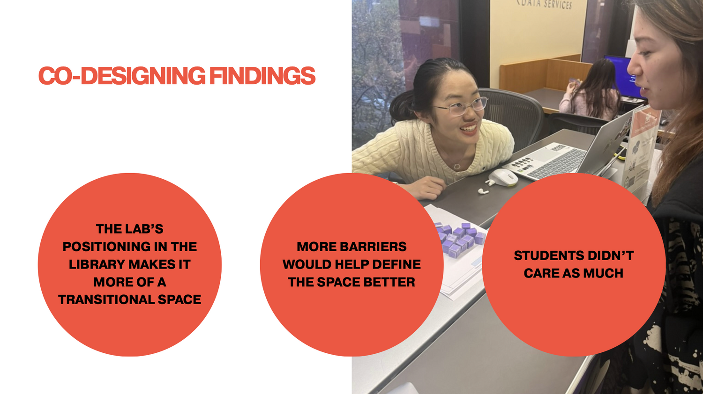
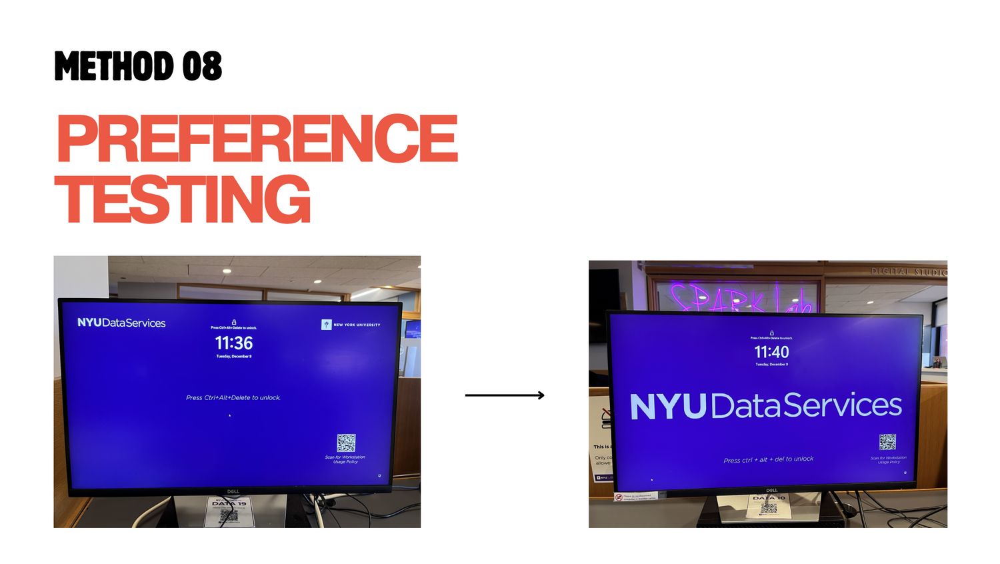
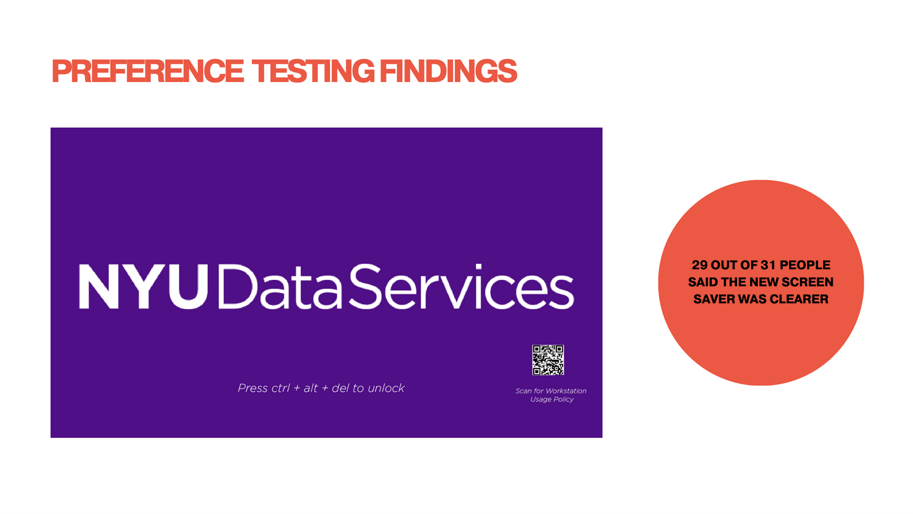

Despite offering specialized software and expert support, NYU’s Data Services (DS) Lab was largely underutilized for its intended purpose and widely misunderstood by students. Many users worked in the space without using its tools, while most of the student population was unaware of the Lab’s existence or services altogether.
Spacial Identity
Implementing the best layout to support the current usage patterns.
Visual Identity
Improving the Lab’s visual identity so its purpose is recognizable and intuitive.
Students Engagement
Increasing active participation through events, programming and signage.






